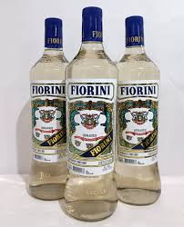

Bebida de origem italiana
O vermute, apesar de muita polêmica sobre sua real origem, foi inicialmente comercializado na Itália pela empresa Carpano, ainda no ano de 1786. É uma bebida que conta com cerca
de 70 a 80% de vinho em sua composição, complementado com substâncias de aromas e sabores diferentes.
